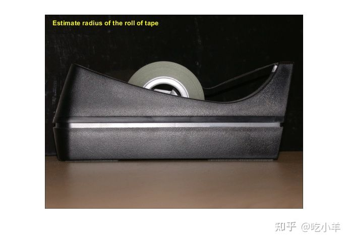
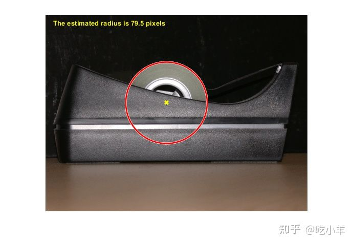

Home
本示例显示如何测量被胶带分配器部分遮挡的胶带卷的半径。利用imfindcircles来完成这项任务。
第 1 步：读取图像
读入tape.png。
RGB = imread('tape.png');
imshow(RGB);
hTxt = text(15,15,'Estimate radius of the roll of tape',...
'FontWeight','bold','Color','y');

第 2 步：找到圆圈
使用imfindcircles函数找到图像中圆的中心和半径。
Rmin = 60; Rmax = 100; [center, radius] = imfindcircles(RGB,[Rmin Rmax],'Sensitivity',0.9) center = 1×2 236.9291 172.4747 radius = 79.5305
第 3 步：突出显示圆形轮廓和中心
% Display the circle
viscircles(center,radius);
% Display the calculated center
hold on;
plot(center(:,1),center(:,2),'yx','LineWidth',2);
hold off;
delete(hTxt);
message = sprintf('The estimated radius is %2.1f pixels', radius);
text(15,15,message,'Color','y','FontWeight','bold');

======================================================================
我的测试结果及程序
下面是我测试的代码：

注：本文根据MATLAB官网内容修改而成。